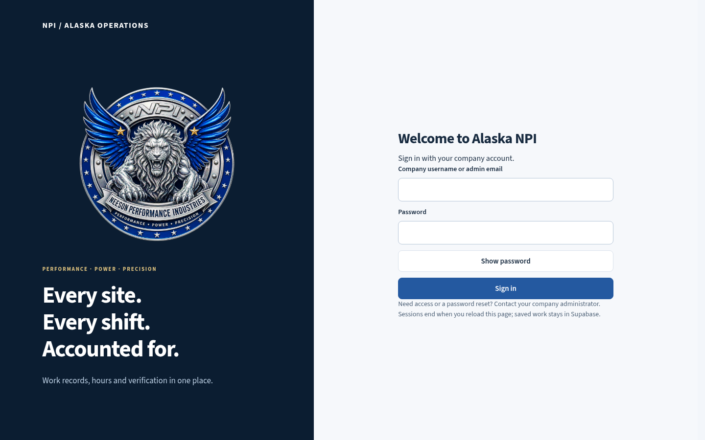
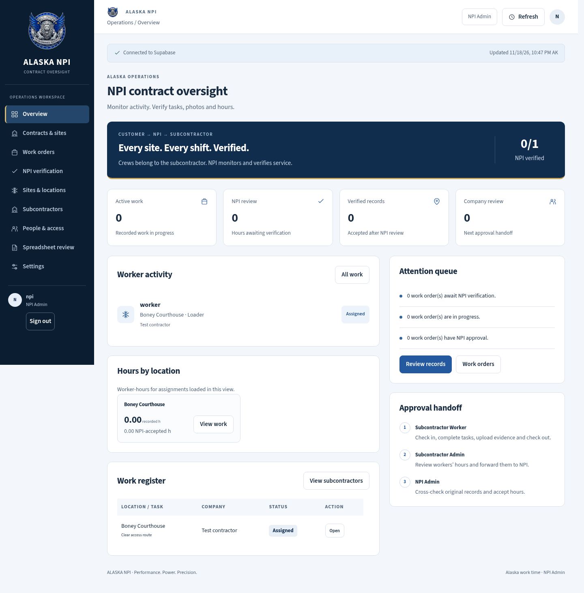
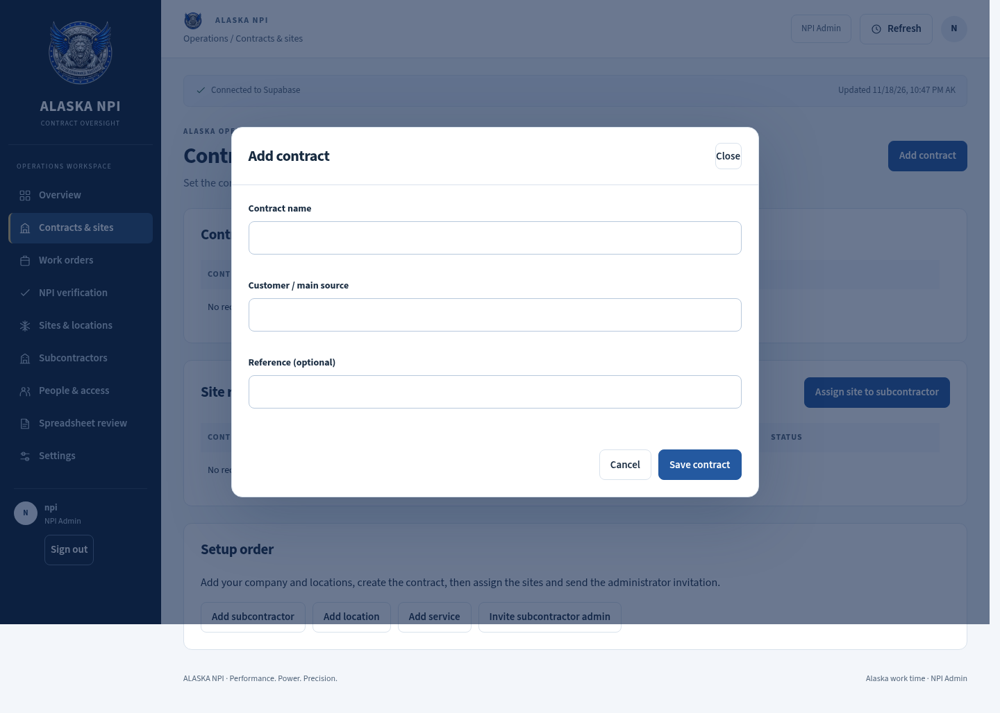
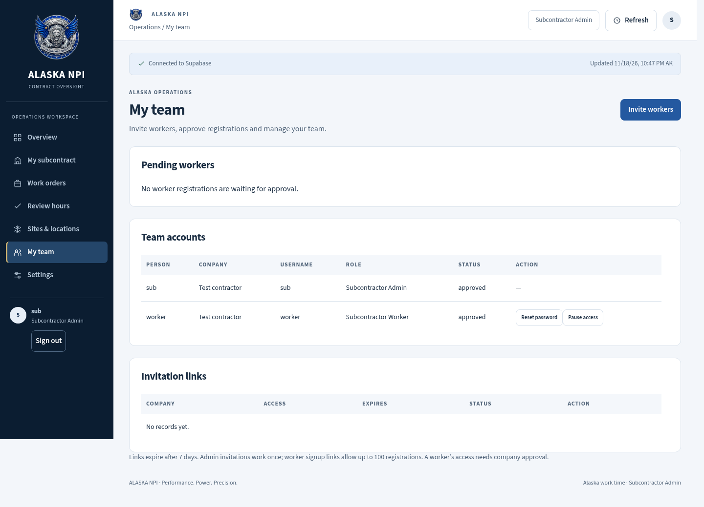
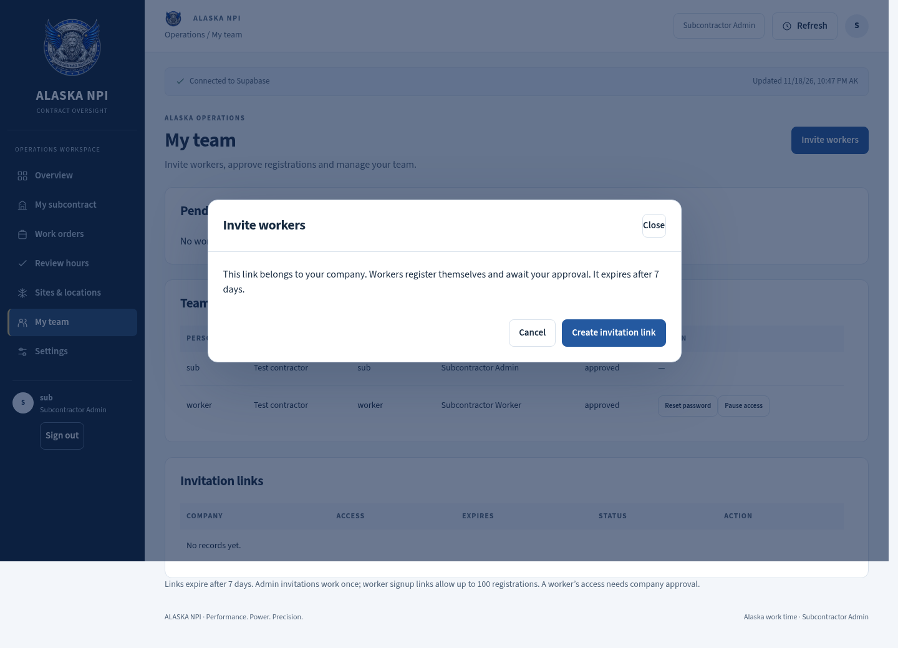
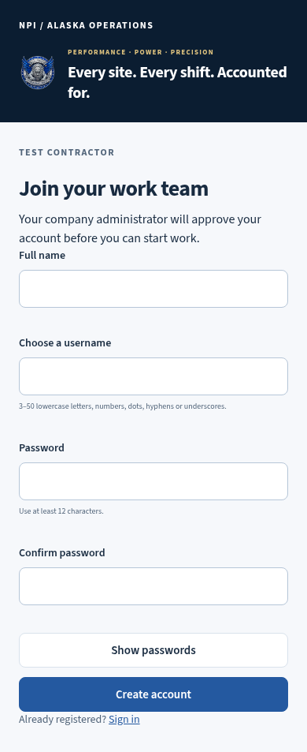
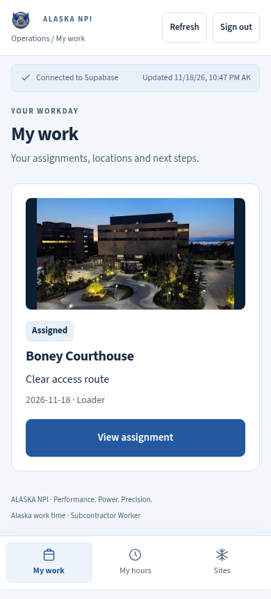
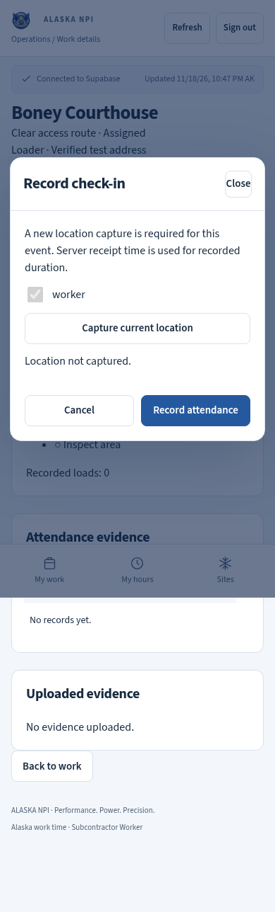

Review date: 19 November 2026. Reviewed source baseline: cb27884fda841b7cd5e050cde2ea768655abfd04.
Google Lighthouse 13.6.0 and Deque axe-core (via @axe-core/playwright 4.14.0) were run against the local running frontend. The Product Design audit skill/framework guided the screenshot review. These are third-party testing engines and a plugin-assisted review, not an independent human security certification or a production penetration test.
Eight captured states: Lighthouse accessibility 100/100, best practices 100/100 in every snapshot. Axe reported zero violations in each state. A zero automated count does not establish full WCAG conformance: keyboard, screen reader, cognitive usability and real device testing remain important.
All authenticated responses were intercepted fictional fixtures. The app's “Connected to Supabase” banner in these screenshots represents a successful simulated response, not proof of a real cloud connection. No real accounts, GPS coordinates, customers or private uploads were inspected. Live authentication, row security, storage permissions, invitation delivery and spreadsheet sync were not certified by these checks.
1. Sign in — healthy. Two-column desktop layout preserves the transparent emblem, restrained typography and strong primary action. Labelled username/password fields and a visible password control. Help directs users to their administrator. Reload-ending sessions are disclosed; this is friction for workers and should be included in training. Evidence: 01-sign-in.png.
2. NPI overview — healthy with onboarding dependency. Sidebar, active state, four summary cards and numbered approval handoff are clear. Hours by location is visible below the first viewport. A new owner must scroll and complete setup before useful work appears; use the supplied setup guide. Evidence: 02-npi-overview.png.
3. Contract form — healthy. Three clearly labelled fields with a separate save action; no pricing included. Setup order is visible behind the dialog. Confirm on real mobile devices that the on-screen keyboard does not hide the save action. Evidence: 03-contract-form.png.
4. Company team — healthy desktop, mobile test needed. Pending registrations, team accounts and invitation links are separated. Account approval and work approval are distinct. Wide account tables need real-phone scrolling and touch testing; the desktop capture alone cannot establish that experience. Evidence: 04-company-team.png.
5. Worker invitation — healthy. Explanation clearly states company ownership, pending approval and seven-day expiry. A single primary action reduces choices. Share links privately; the UI is not evidence of deployed token enforcement. Evidence: 05-worker-invitation.png.
6. Mobile registration — healthy, some friction. One-column layout, fixed company context, username rules and a visible 12-character password instruction. Password length and waiting for approval may require help for first-time workers. Full-page capture includes content below the initial phone viewport. Evidence: 06-mobile-signup.png.
7. Worker home — healthy. One assignment card, matching Boney reference photograph and large View assignment action. Three bottom navigation items keep the worker view simple. Reference photos must not be mistaken for uploaded completion evidence. Evidence: 07-worker-phone.png.
8. GPS capture — healthy, field validation outstanding. Dedicated Capture current location action and explicit uncaptured state. A fresh capture is explained. Permission refusal, poor accuracy, signal loss and checkout recovery require real-device field acceptance, beyond this snapshot. Evidence: 08-gps-required.png.
Sign-in navigation: performance 75, accessibility 100, best practices 100, SEO 83. See lighthouse-login.report.html/json. This was localhost Vite development mode, not a production Cloudflare benchmark. Unminified/unused JavaScript and CSS affect the score. The report also flags image delivery, missing meta description and invalid robots response (development SPA fallback). SEO has limited value for an authenticated internal portal. Optimise the delivered emblem and benchmark the production build before making a speed claim.
- High — live acceptance pending: owner manually verifies two separate companies cannot access one another's users, assignments, uploads or invitation links; confirms the current release was actually deployed. This audit did not establish a defect; it establishes a test boundary.
- High — field acceptance pending: use an actual phone to capture separate check-in/out positions, upload a real work photo, submit, company approve, NPI accept, and confirm the management workbook updates without overwriting attendance.
- Medium — worker comprehension: have one worker complete registration and one shift without coaching. Observe password entry, pending approval, GPS permission and the difference between recorded and claimed time.
- Medium — production performance: run Lighthouse against the deployed production build and reduce oversized artwork if needed.
- Low — public metadata: add relevant description/robots handling if public discoverability is desired. Do not publish private operational records for SEO.
- lighthouse-three-roles.html and .json: eight Lighthouse snapshots.
- axe-three-roles.json: raw axe results, including checks requiring human judgement.
- lighthouse-login.report.html and .json: development-server navigation report.
- 01–08 PNG files: fresh screenshot evidence.
No application UI or production data was changed by this review. Billing and invoice flows are outside the current operations release.







